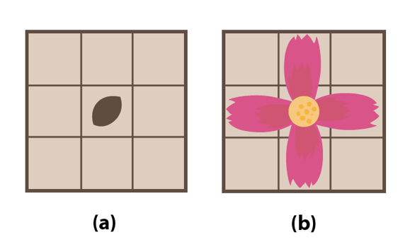
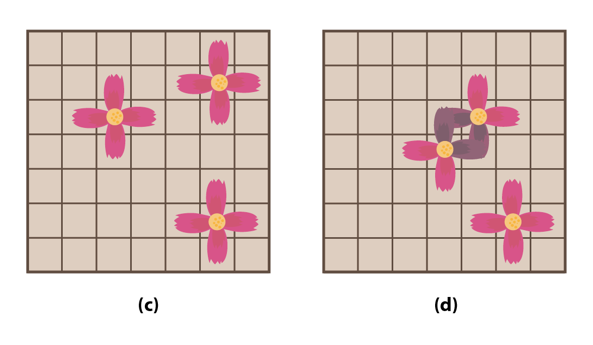

2017년 4월 5일 식목일을 맞이한 진아는 나무를 심는 대신 하이테크관 앞 화단에 꽃을 심어 등교할 때 마다 꽃길을 걷고 싶었다.
진아가 가진 꽃의 씨앗은 꽃을 심고나면 정확히 1년후에 꽃이 피므로 진아는 다음해 식목일 부터 꽃길을 걸을 수 있다.
하지만 진아에게는 꽃의 씨앗이 세개밖에 없었으므로 세 개의 꽃이 하나도 죽지 않고 1년후에 꽃잎이 만개하길 원한다.
꽃밭은 N*N의 격자 모양이고 진아는 씨앗을 (1,1)~(N,N)의 지점 중 한곳에 심을 수 있다. 꽃의 씨앗은 그림 (a)처럼 심어지며 1년 후 꽃이 피면 그림 (b)모양이 된다.

꽃을 심을 때는 주의할 점이있다. 어떤 씨앗이 꽃이 핀 뒤 다른 꽃잎(혹은 꽃술)과 닿게 될 경우 두 꽃 모두 죽어버린다. 또 화단 밖으로 꽃잎이 나가게 된다면 그 꽃은 죽어버리고 만다.

그림(c)는 세 꽃이 정상적으로 핀 모양이고 그림(d)는 두 꽃이 죽어버린 모양이다.
하이테크 앞 화단의 대여 가격은 격자의 한 점마다 다르기 때문에 진아는 서로 다른 세 씨앗을 모두 꽃이 피게하면서 가장 싼 가격에 화단을 대여하고 싶다.
단 화단을 대여할 때는 꽃잎이 핀 모양을 기준으로 대여를 해야하므로 꽃 하나당 5평의 땅을 대여해야만 한다.
돈이 많지 않은 진아를 위하여 진아가 꽃을 심기 위해 필요한 최소비용을 구해주자!
입력의 첫째 줄에 화단의 한 변의 길이 N(6≤N≤10)이 들어온다.
이후 N개의 줄에 N개씩 화단의 지점당 가격(0≤G≤200)이 주어진다.
꽃을 심기 위한 최소 비용을 출력한다.
Input:
6
1 0 2 3 3 4
1 1 1 1 1 1
0 0 1 1 1 1
3 9 9 0 1 99
9 11 3 1 0 3
12 3 0 0 0 1
Output:
12